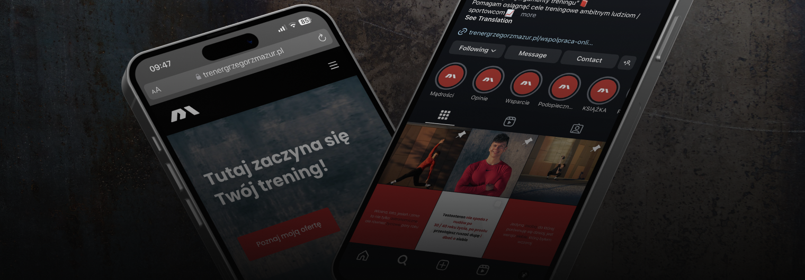
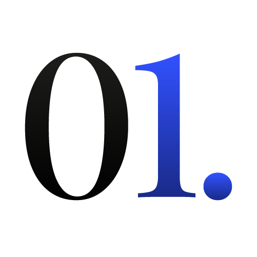

Bezpłatny audyt wizualny
Wizualna tożsamość marki jest jednym z kluczowych elementów, które wpływają na to, jak firma jest postrzegana przez klientów.
Czy Twoja marka wyróżnia się na rynku? Czy jej komunikacja wizualna wspiera wizerunek i pomaga budować relacje z odbiorcami? Jeśli masz trudności z odpowiedzią na te pytania, audyt wizualny może być Ci potrzebny.
Dowiedz się, czym jest audyt wizualny.
Jest to nowe, obiektywne spojrzenie na Twoją markę, oczami jej potencjalnego klienta i z doświadczeniem projektanta. Analiza wszystkich elementów wizualnych, które firma wykorzystuje w swojej komunikacji.
To także szansa, by zobaczyć markę z nowej perspektywy. Zyskasz wgląd w to, co działa dobrze, a co wymaga poprawy. Dzięki rekomendacjom możesz skutecznie wzmocnić wizerunek i lepiej odpowiadać na potrzeby klientów, budując silniejszą relację z odbiorcami.
Jego celem jest sprawdzenie poprawności komunikacji wizualnej marki pod kątem spójności i dostosowania do grupy odbiorczej.
Jak wygląda realizacja audytu

Informacje o marce
Audyt wizualny rozpoczynamy od wypełnienia formularza. Dzięki niemu poznam Twoją markę, jej cele, wyzwania i grupę odbiorczą.
Analiza materiałów
Przeglądam dostępne elementy wizualne Twojej marki, analizując ich spójność, jakość oraz ich atrakcyjność i adekwatność do grupy docelowej.


Raport i rekomendacje
Po zakończeniu analizy otrzymasz ode mnie raport z wnioskami oraz rekomendacjami, które wskażą, co warto zmienić lub ulepszyć, aby komunikacja wizualna marki była skuteczniejsza.
Dla kogo jest audyt wizualny
Audyt wizualny to usługa dla firm, które chcą usprawnić swoją komunikację wizualną. Może być szczególnie potrzebny, jeśli:
- Nie masz pewności, czy komunikacja wizualna marki działa poprawnie
- Zauważasz, że marka nie osiąga oczekiwanych rezultatów wizerunkowych
- Chcesz lepiej dopasować identyfikację wizualną marki do aktualnych wartości firmy
- Planujesz rebranding lub odświeżenie wizerunku marki
Kluczowe korzyści:
- Analiza punktów styku marki z klientem
- Świeże spojrzenie na komunikację wizualną marki
- Wskazanie deficytów, błędów projektowych i obszarów do poprawy
- Propozycje rozwiązań dostosowanych do Twojej grupy odbiorców
- Lepsze zrozumienie tego w jaki sposób Twoja marka jest postrzegana na rynku